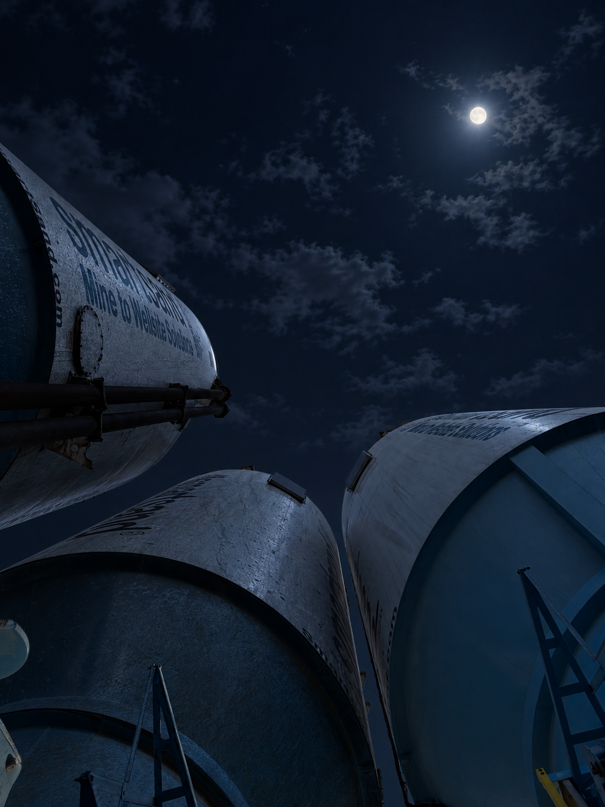

01
PLANNING
Plan
Review schedules, expected volumes, site constraints, staging requirements and the sequence needed to support the operation.
SAND SHARK / OPERATIONS
Frac sand logistics does not happen in a straight line. It is a coordinated sequence of supply, transportation, staging, equipment, communication and field execution. Sand Shark is built to keep those pieces connected.
FROM LOAD TO LOCATION
Sand Shark provides field coordination around the movement of frac sand and the logistics that surround it.
That means staying connected to carriers, dispatch, site personnel and customer representatives while the operation changes in real time.
The objective is straightforward: keep the material moving, keep information moving and keep the field organized.
Review schedules, expected volumes, site constraints, staging requirements and the sequence needed to support the operation.
Organize truck arrivals, site flow and positioning so incoming loads can move through the location without unnecessary confusion.
Maintain communication between the people responsible for dispatch, transportation, sand handling and field execution.
Stay engaged while conditions change and communicate the next requirement before it becomes a problem.

MATERIAL MOVEMENT
Whether the job calls for wet sand, dry sand, boxes, silos, belly dumps or pneumatic equipment, the logistics surrounding the material still have to work together.
Sand Shark's field support is designed around that reality. We coordinate the people, timing, communication and site activity surrounding the sand movement so the operation has a clear line from arrival to placement.